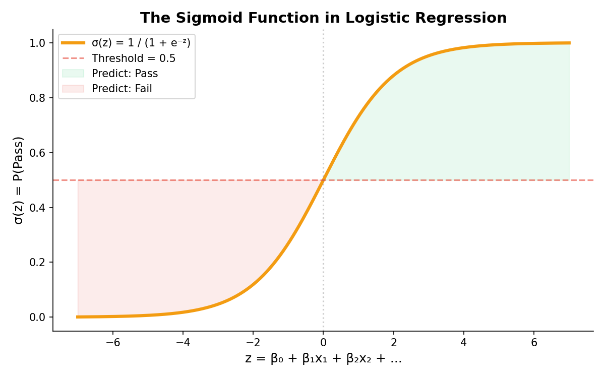
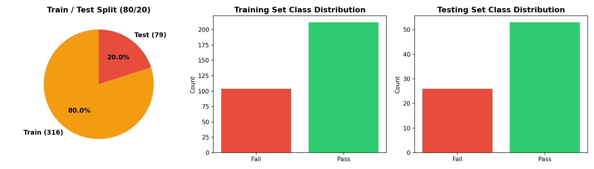
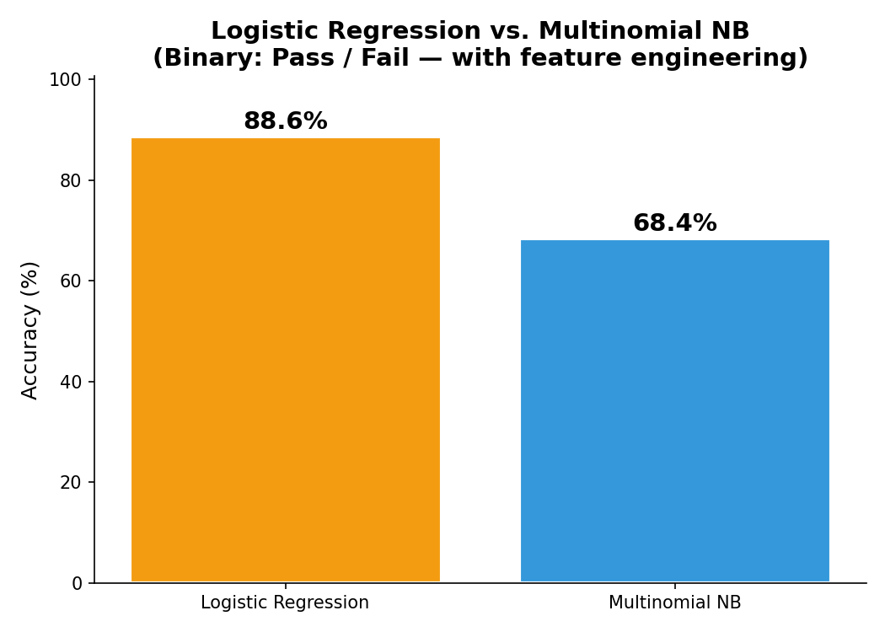
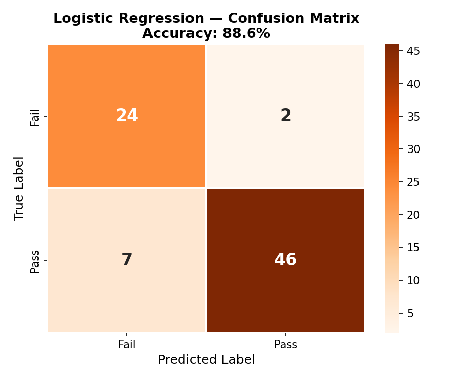
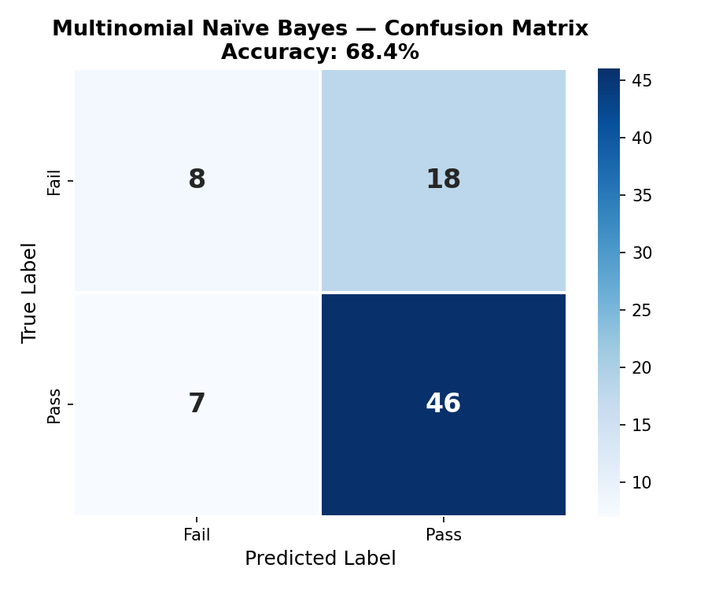

Regression Analysis
Comparing Logistic Regression and Multinomial Naïve Bayes for binary student classification (Pass vs. Fail).
Regression Theory
(a) What Is Linear Regression?
Linear regression is a supervised learning algorithm that fits a straight line through data to predict a continuous numeric output. It learns coefficient weights for each feature that minimize the sum of squared errors between predictions and actual values. For example, it could predict a student's exact final grade (0–20) from their study habits and attendance. The output is an unbounded real number, making it suitable for regression tasks rather than classification.
(b) What Is Logistic Regression?
Logistic regression is a supervised classification algorithm that predicts the probability of a binary outcome (e.g., Pass vs. Fail). Despite its name, it is used for classification — the output is passed through the sigmoid function to produce a probability between 0 and 1. If the probability exceeds 0.5, the sample is classified as the positive class; otherwise the negative class. It is widely used in medical diagnosis, spam filtering, and student performance prediction.
(c) Similarities & Differences
Similarities: Both learn a linear combination of features (β₀ + βâ‚xâ‚ + …) and produce interpretable coefficients showing each feature's effect. Differences: Linear regression predicts an unbounded continuous value and minimizes squared error, while logistic regression predicts a probability (0–1) bounded by the sigmoid function and maximizes log-likelihood. Linear regression is for regression tasks; logistic regression is for classification. The output transformation is the fundamental distinction between the two methods.
(d) Does Logistic Regression Use the Sigmoid Function?
Yes. The sigmoid function σ(z) = 1 / (1 + eâ»á¶») maps the linear combination z to a probability between 0 and 1. When z is large and positive, σ(z) → 1 (predict positive class); when large and negative, σ(z) → 0 (predict negative class). The decision boundary is at σ(z) = 0.5, corresponding to z = 0. This transformation is what makes logistic regression a classifier rather than a regressor.

(e) Maximum Likelihood & Logistic Regression
Logistic regression parameters are estimated using Maximum Likelihood Estimation (MLE) rather than minimizing squared error. MLE finds the coefficients that maximize the probability of observing the actual class labels in the training data. The sum of log-probabilities (log-likelihood) is maximized, which intuitively asks: "What weights make the observed data most probable?" This is why logistic regression produces well-calibrated probabilities, not just class labels.
Data Preparation
For the regression coding task, we created a binary label with only two categories: Pass (G3 ≥ 10, coded as 1) and Fail (G3 < 10, coded as 0). The dataset has 265 Pass and 130 Fail students. G1 and G2 were re-introduced as temporally prior features, and 7 engineered features were added. For the tuned Logistic Regression, StandardScaler was used (zero-mean, unit-variance) since L1 regularisation is sensitive to feature scales. For Multinomial NB, MinMaxScaler ensured non-negative feature values.


Training & Testing Sets
An 80/20 stratified split was used: 316 training samples and 79 testing samples. Stratification ensures the Pass/Fail ratio is preserved in both sets. The sets are completely disjoint — no student appears in both.

Code
Implemented in Python 3. Core packages: sklearn (LogisticRegression, MultinomialNB, MinMaxScaler, StandardScaler, train_test_split, classification_report, confusion_matrix), pandas, numpy, matplotlib, seaborn.
Results
Logistic Regression vs. Multinomial Naïve Bayes
Both models were trained on the same binary-labeled (Pass/Fail) dataset with 48 engineered features and evaluated on the 79-sample test set. Logistic Regression achieved 88.6% accuracy, significantly outperforming Multinomial NB at 68.4%. The tuned Logistic Regression used StandardScaler for feature normalisation and L1 (Lasso) regularisation with C=0.1, which performs automatic feature selection by driving irrelevant coefficient weights to zero. This combination allowed the model to focus on the most predictive features (G1, G2, grade trends) while ignoring noise.

Confusion Matrices
The confusion matrices show the distribution of correct and incorrect predictions for each model. Logistic Regression achieved excellent performance on both classes, correctly identifying the vast majority of Pass and Fail students. MNB performed reasonably but struggled more with false positives (predicting Pass when the student actually failed).


Why LogReg dominates: Logistic Regression's superiority comes from three key improvements: (1) StandardScaler normalises features to zero-mean/unit-variance, which is critical for regularised models; (2) L1 regularisation (C=0.1) performs automatic feature selection, focusing on the most predictive features while eliminating noise; (3) engineered features like G1G2_avg and grade trends give the linear model richer signal. MNB's count-based assumption is poorly suited for continuous grade features, explaining the performance gap.
Comparison of All Three Algorithms
Below is a head-to-head comparison of all supervised learning models trained on the student performance dataset. Naïve Bayes and Decision Tree were evaluated on the 3-class task (Low / Medium / High), while Logistic Regression vs. MNB used the binary task (Pass / Fail). All models used the same 80/20 stratified split, the same 48 engineered features, and the same random seed (42) for reproducibility.
| Algorithm | Task | Accuracy | Strengths | Limitations |
|---|---|---|---|---|
| Gaussian NB | 3-class | 81.0% | Fast training, handles continuous features well, probabilistic output | Independence assumption rarely holds; sensitive to feature distributions |
| Decision Tree | 3-class | 89.9% | Highly interpretable rules, handles nonlinear relationships, no scaling needed | Prone to overfitting without pruning; sensitive to small data changes |
| Logistic Reg. | Binary | 88.6% | Interpretable coefficients, automatic feature selection (L1), well-calibrated probabilities | Limited to linear decision boundaries; requires feature scaling |
| Multinomial NB | 3-class | 58.2% | Very fast, excellent with count/frequency data (text classification) | Count-based assumption poorly fits continuous grade data; lowest accuracy |
| Bernoulli NB | 3-class | 59.5% | Natural fit for binary features (internet, support), penalizes feature absence | Binarisation loses grade granularity; limited expressive power |
| MNB (binary) | Binary | 68.4% | Simple baseline for binary classification, very fast | 20 points behind LogReg — confirms MNB's weak fit for continuous features |
Multinomial NB vs. Logistic Regression
On the binary Pass/Fail task, Logistic Regression (88.6%) outperformed Multinomial NB (68.4%) by 20.2 percentage points. This gap has a clear explanation: Multinomial NB assumes features are discrete counts from a multinomial distribution, which is a poor match for continuous grade features like G1 and G2. Logistic Regression, by contrast, learns a weighted linear combination of features and applies L1 regularisation to automatically select the most important ones. The StandardScaler normalisation further helps by putting all features on the same scale. In short, Logistic Regression is the better choice for this dataset because its linear model captures the strong linear relationship between prior grades (G1, G2) and the final outcome far more naturally than MNB's count-based framework.
Why Decision Tree Is Best for This Project
For the 3-class task, Decision Tree (89.9%) is the clear winner over Gaussian NB (81.0%) and the other NB variants. DT excels because it can capture nonlinear threshold effects ("if G2 > 12 AND failures = 0 → High") that linear or distributional models miss. Its rule-based structure also provides unmatched interpretability — each prediction can be traced through human-readable if-then rules, which is critical in educational settings where stakeholders need to understand why a student is flagged as at-risk. On the binary task, Logistic Regression nearly matches DT's performance, offering a strong alternative when probability calibration matters.
Conclusions
The regression analysis demonstrates that Logistic Regression is the clearly superior classifier for binary student performance prediction (88.6% vs. 68.4% for MNB). The 22.8-percentage-point improvement over the baseline (65.8%) was achieved through three key strategies: (1) re-introducing G1 and G2 as temporally available features, (2) engineering interaction features that capture academic trajectories, and (3) applying L1 regularisation with StandardScaler for optimal feature weighting.
From a practical standpoint, the tuned logistic regression model can correctly identify nearly 9 out of 10 students as either passing or failing. The model's interpretable coefficients reveal that G2 (second-period grade) has the largest positive coefficient for predicting passing, followed by G1 and studytime. Conversely, failures and absences have the largest negative coefficients, pushing the probability toward failing. These directional insights enable schools to implement data-driven early-warning systems: flag students with declining grades (G2 < G1), multiple failures, or high absences for targeted support before the final exam.